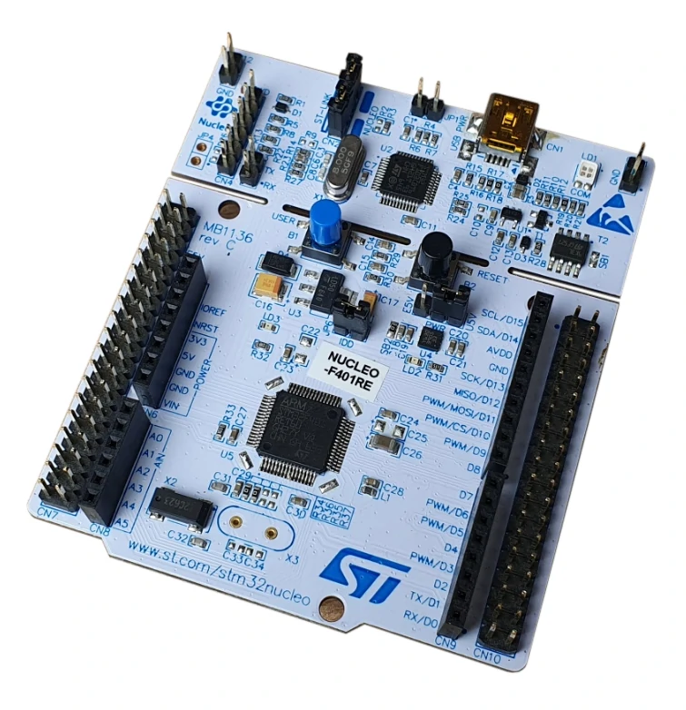

Welcome to my website
A man has no name
About me
Diligent problem-solver with resourceful approach to challenges and organized style. Masters Student with a wide array of skills in hardware design and software, eager to secure an entry-level IC Design position. Intrigued by new challenges and always willing to learn. Ready to help the team achieve company goals
Education
University of Ottawa
- Master of Applied Science, Electrical And Computer Engineering, Expected in 12/2022
- Continuing Education in : VLSI Design (Analog & Digital) , Embedded Software Design, Signal Processing.
Coventry University
- Bachelor of Engineering, Electronics And Telecommunication , 03/2019
- Dean's List 3.75/4.00 CGPA
Work Experience
Researcher at Middle East College (Jan 2020 - Aug 2020)
- Implemented hardware design of wearable medical device involving multiple MCUs.
- Solely responsible for programming prototype which required using SPI and I2C communication protocols.
- Programmed MCU to implement Haversine Law and interact with Heart Beat & Temperatures sensors.
- Used web based API to implement real time information stream from prototype.
- Utility Patent pending.
Skills
- C
- C++
- Python
- HTML/CSS
- Embedded C
- Git
- Cadence Virtuoso
- Verilog
- LT Spice
- ModelSim Se
- Eagle PCB Design
- MATLAB
Projects
RTL Verilog Designs and Verification
- Designed FIFO, 4-bit ALU, Frequency Divider, Dual Port RAM etc
- Testbenches for Designs
- Familiarity with Modelsim Se
- GitHub Link

IC Design Projects using Cadence Virtuoso
- Design of Cascaded Inverters as Buffer to drive large load Capacitance.
- Design of Ring Oscillator.
- Bi Directional Voltage Level Converter 5v | 3.3v

Drivers for STM32F303VC Microcontroller
- Wrote drivers for GPIO , SPI , I2C and UART communication protocols
- Wrote programs testing the drivers eg: Communication between an Arduino and Stm32 Board using SPI.
- GitHub Link

Processor Level Programming of Arm M4 Processor
- Bit Banding , Stack Pointers , Access Levels , interrupts etc.
- GitHub Link

Signal Processing Designs
- Design of Mean Filter Smoothing, Low pass , High Pass, Narrow Band.
- Spectral Analysis of Signals
- GitHub Link

PCB Designs using Eagle PCB
- Relay Driver
- Real Time Clock
- Wifi Module
- Motor Speed Controller
- Atmega2560 MCU Board
- GitHub Link
Research Papers
Abstract: Abstract
Monitoring and managing potential infected patients of COVID-19 is still a great challenge for the latest
technologies. In this work, IoT based wearable monitoring device is designed to measure various vital
signs related to COVID-19. Moreover, the system automatically alerts the concerned medical authorities
about any violations of quarantine for potentially infected patients by monitoring their real time GPS
data. The wearable sensor placed on the body is connected to edge node in IoT cloud where the data is
processed and analyzed to define the state of health condition. The proposed system is implemented with
three layered functionalities as wearable IoT sensor layer, cloud layer with Application Peripheral
Interface (API) and Android web layer for mobile phones. Each layer has individual functionality, first
the data is measured from IoT sensor layer to define the health symptoms. The next layer is used to store
the information in the cloud database for preventive measures, alerts, and immediate actions. The Android
mobile application layer is responsible for providing notifications and alerts for the potentially
infected patient family respondents. The integrated system has both API and mobile application
synchronized with each other for predicting and alarming the situation. The design serves as an essential
platform that defines the measured readings of COVID-19 symptoms for monitoring, management, and analysis.
Furthermore, the work disseminates how digital remote platform as wearable device can be used as a
monitoring device to track the health and recovery of a COVID-19 patient.
Link to paper
Link to paper
Abstract: Fire safety has been a major concern for vehicles for a long time. Especially
vehicles which carry a large number of people e.g.: Trains, Buses, and Ships. Taking this problem into
consideration, a circuit has been designed that could minimize the adverse effects of such incidents and
decrease the emergency response time by detecting the fire and finding the nearest helping station based
on the coordinates using Haver sine formula. The system proposed has multiple uses, when no fire is
detected the circuit live streams data including temperature, number of passengers, location, and the
speed of the bus to the monitoring station using an API. When fire is detected by the sensors, the data
from these sensors is used by the program to autonomously perform series of steps including opening the
windows and sending the information to the nearest firefighting department in order to decrease the
response time. Prototype implementation shows that the system is able to detect the fire on time and send
the information without significant lag to the closest fire station. This paper also provides a simplified
guide to the researcher who would like to conduct projects based on IOT and fire safety.
Link to paper
Link to paper
Abstract: Acute Bronchiolitis is a disease which usually infects children of the age 0
to 6 years old. The patients infected by this disease require medical attention at hospitals. The patients
must be admitted in the hospitals for a period of 2-3 days. Parents of the patients must stay in the
hospital along with them. This causes lack of hospital beds, more expense of the hospital to provide extra
food for the parents. By a qualitative research, it was found that parents would want an affordable device
so that they could care for their children from home instead of staying at the hospital. Parents from all
over Oman come to the capital so that their children can be treated. Children also tend to get exposed to
more sickness by being around sick children at the hospital. Taking this problem into consideration, a
circuit has been designed in such a way it was easy to use and that it could be used by parents to treat
their children at home without the need to visit a hospital. The circuit works on Arduino Uno and has
various pre-existing modules attached to it , the estimated cost of the device is far lesser than what the
mainstream industrial devices cost. The device consists of a Bluetooth Module for the purpose of
connectivity via cellphone ,a 12V vacuum pump to suck the mucus out of the patient’s lungs, variable
resistor to control the force of vacuum and a rubber tube capable of fitting into the nostril to allow
suction of mucus. This simple device made from the counter parts can offer significant benefits to
patients affected by Acute Bronchitis.
Link to paper
Link to paper
Abstract: The paper is intended to keep up security amongst 4 parallel telephones
associated with a solitary telephone cable wire. The proposed system provide near independent line like
performance for the set of 4 intercoms line. At the point when two or more telephone is associated with a
solitary telephone wire line, anybody can pick up telephone to attend the discussion on other end. The
projected framework gives an answer for security amongst the telephones associated. So as to meet the
prerequisite we are utilizing four phones associated as a part of parallel throughout solitary phone cable
line with every phone associated through communicate a transfer in the framework.
At the point when any of phone is picked up every single other telephone are disengaged by the transfers
through a configuration plan of opt couplers, the consequence of that is provided to a code able Arduino.
The Arduino drives signal to a seven segment demonstration to show which phone is picked up, whereas
different phones are disengaged by particular transfers with assist of Relay-Driver Integrated Circuit
connected to Arduino.
The system can be utilized in home and workplaces there two or more phone is associated in parallel
throughout a solitary phone line wire. The venture is reasonable for both approaching and going outward
calls.
Facilitate the venture can be upgraded by including more numeral of telephones with intercom service. An
approaching caller ID service can likewise add further to this.
Link to paper
Link to paper
Abstract: LPG and Natural Gas are the two primary gases used in Gas cookers all over the
world , when these Gases leak in high concentration in enclosed areas the results can be fatal. Keeping
this situation in mind this paper proposes a solution which prevents the buildup of flammable gases in
enclosed area by autonomously opening windows through linear actuators. The concentration of flammable gas
in a room can be detected through the MQ-5 sensor , once the concentration of this gas exceeds the
predefined threshold MQ-5 sensor sends an output to the Raspberry Pi which takes a series of steps in
order to prevent the situation from taking a fatal turn. The steps include: Opening the Windows in order
to prevent the buildup of flammable gas, Alerting the Residents of the house via an E-mail and an indoor
alarm, Sending the precise location of the house (GPS co-ordinates) to a fire station. All these steps are
done autonomously in real time , thereby responding to the situation in the most efficient way.
Link to paper
Link to paper